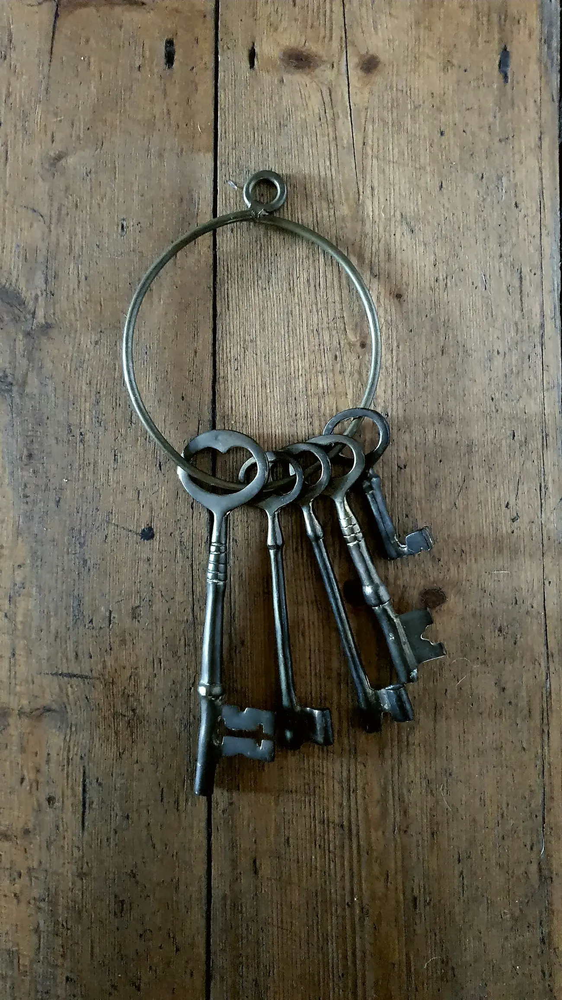
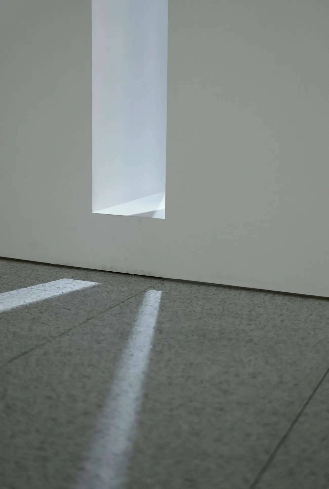
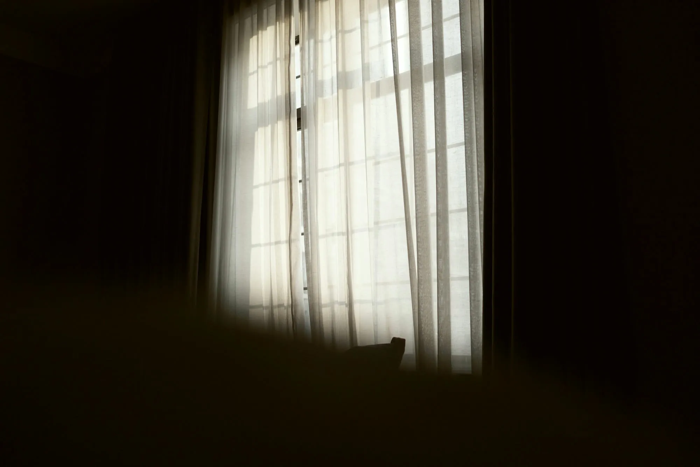
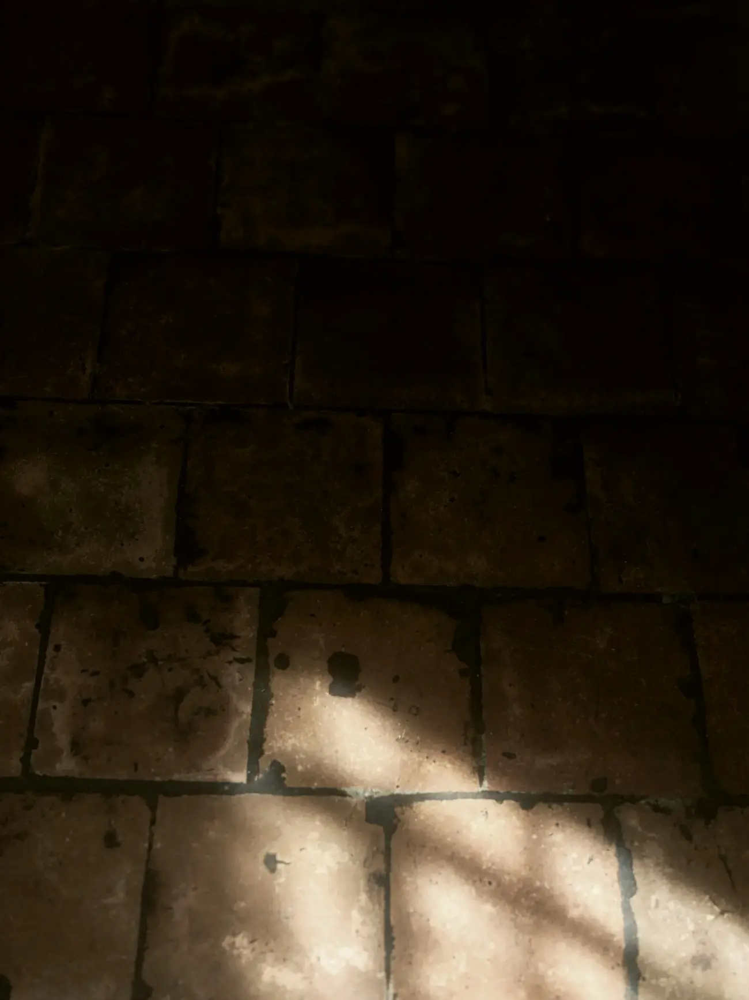

O piso que atravessa gerações.Rua Dr. Antônio José Luciano, 293, Centro
Quando alguém da família falta, ficam a casa, os papéis e muitas perguntas. O escritório cuida da parte jurídica com calma, explica cada etapa em linguagem simples e deixa a família decidir com informação.

Áreas de atuação
O foco do escritório é o direito de família e sucessões. Cada assunto começa por uma conversa reservada, presencial ou por vídeo.
Direito do consumidor, imobiliário (usucapião e regularização), previdenciário, do trabalho, criminal e cível.

Espaço reservado para a foto do Dr. Jeferson.
Dr. Jeferson Guilherme dos Santos
OAB/SP282.129, advogado responsável
Cada caso é atendido diretamente pelo advogado responsável, do primeiro contato até o fim. O escritório atua na comarca de Osasco e nos tribunais da região, sempre com contrato de honorários por escrito.
AtendimentoPresencial com agendamento ou por videoconferência
HorárioSegunda a sexta, das 9h às 18h
OndeRua Dr. Antônio José Luciano, 293, Centro de Osasco
O inventário, passo a passo
Cada família tem uma situação. Este é o caminho mais comum, para saber o que esperar antes da primeira conversa.


1
A primeira conversa
O advogado ouve a família, entende quem são os herdeiros e quais são os bens, e explica os caminhos possíveis. Pode ser no escritório ou por vídeo.
2
Os documentos
Certidões de quem faleceu e dos herdeiros, e os documentos de cada bem. Não precisa ter tudo no primeiro dia: a lista se completa junto com o escritório.
3
Cartório ou Justiça
Quando todos os herdeiros estão de acordo, em regra o inventário pode ser feito em cartório, por escritura pública. Sem acordo, ou em situações específicas, ele segue pela Justiça.
4
O imposto
O ITCMD é o imposto estadual sobre a herança. Ele é calculado e recolhido antes da partilha, e o atraso na abertura do inventário pode aumentar o valor.
5
A partilha e o registro
Com a escritura ou o formal de partilha, cada bem passa para o nome de quem herdou, incluindo o registro dos imóveis em cartório.
O que levar na primeira conversa
Para um inventário. Traga o que tiver em mãos; o restante se organiza depois.
Certidão de óbito
RG e CPF de quem faleceue de cada herdeiro
Certidão de casamentoou documento da união estável
Certidões de nascimento dos filhos
Matrícula dos imóveise o carnê do IPTU
Documento dos veículos
Extratos de contas e aplicações
Testamentose houver
O escritório
Endereço
Rua Dr. Antônio José Luciano, 293 Centro, Osasco/SP, 06010-110
Não. Quando todos os herdeiros estão de acordo, em regra o inventário pode ser feito em cartório, por escritura pública (Código de Processo Civil, art. 610). Algumas situações ainda exigem o processo judicial, e isso se avalia na primeira conversa.
Existe prazo para abrir o inventário?
Sim. A lei prevê a abertura em até 2 meses depois do falecimento (CPC, art. 611). Em São Paulo, o atraso pode gerar multa sobre o ITCMD.
Preciso de advogado para fazer o inventário em cartório?
Sim. A escritura de inventário e partilha exige que as partes estejam assistidas por advogado ou defensor público (CPC, art. 610, § 2º).
O atendimento pode ser por vídeo?
Pode. O atendimento é presencial, com horário agendado, ou por videoconferência, de segunda a sexta, das 9h às 18h.
Como são combinados os honorários?
Sempre em contrato escrito, antes de começar o trabalho, depois de entender o caso na primeira conversa.
Uma conversa reservada, no seu tempo.
Mande uma mensagem pelo WhatsApp para agendar um horário no escritório ou por vídeo.